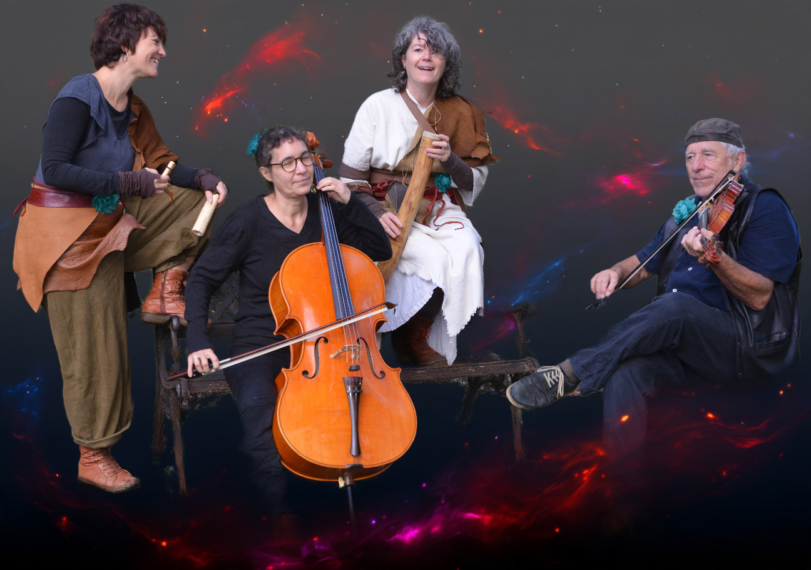
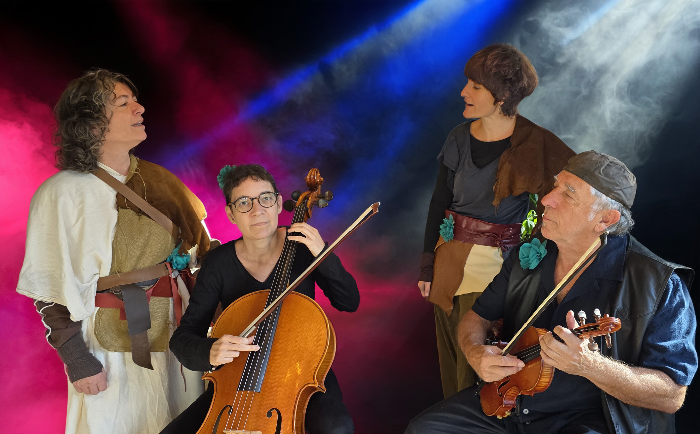
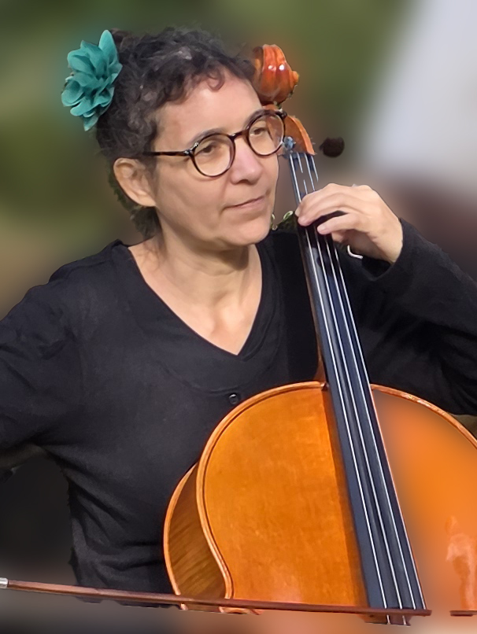
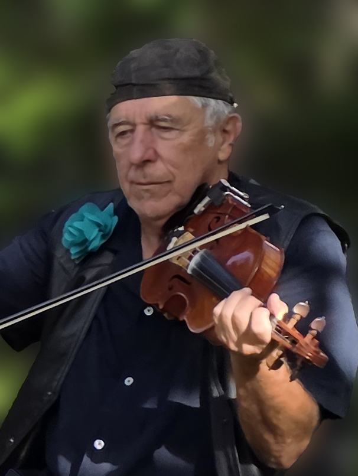

Des femmes chantent les femmes
Des voix de femmes qui traversent les frontières et font vibrer le monde. Le quatuor tisse un univers acoustique vibrant où la polyphonie et la corde se répondent avec finesse et sensibilité.
Deux chanteuses aux harmonies vocales puissantes et sensibles dialoguent avec le violoncelle, le violon, le banjo, le ukulélé ou la guitare pour un voyage à travers les continents, au fil de chants de femmes d’hier et d’aujourd’hui.
"Des femmes chantent les femmes" : un concert intimiste et généreux, un pont entre les cultures, un hommage aux histoires partagées où chaque chanson devient une voix, une histoire, un voyage.


Du chant de travail ancestral aux berceuses transmises de génération en génération, « Les petites z’elles » explore le quotidien, les joies et les luttes des femmes à travers le monde et les époques. Mères, filles, ouvrières ou voyageuses : le groupe donne la voix à ces destins croisés venus de tous les continents.
Sans dogme ni posture radicale, le projet pose un regard tendre, poétique et profondément humain sur les problématiques universelles qui traversent la vie des femmes.
Chant, clarinette, percussions mandingues. Se forme à la musicothérapie et explore la polyphonie et l'improvisation vocale.
Chant choral et polyphonies. Vibre aux chants de femmes de tous horizons, transmis depuis des temps immémoriaux.

Violoncelliste classique. Milite à travers la musique pour la diffusion des cultures, l’ouverture et la diversité.

Violon, ukulélé, guitare, banjo, harmonica, claviers. Écume les scènes de la musique trad au rock et à l'americana.
Nos concerts durent en moyenne 1h à 1h15 selon le programme choisi (avec ou sans entracte). Nous proposons également des formats courts sur mesure pour les réceptions.
• Distribution : 4 artistes sur scène (2 chanteuses, 1 violoncelliste, 1 multi-instrumentiste : violon, banjo, ukulélé, guitare)
• Format : Concert (45 min à 1 h 15)
• Public : Tout public
• Implantation : Adapté aux saisons culturelles, festivals de musiques du monde/trad, scènes acoustiques, chapelles et lieux patrimoniaux.
• Technique : Autonome en sonorisation / éclairage
Vous souhaitez programmer le quatuor Les petites z'elles pour votre festival, saison culturelle ou événement privé ? Téléchargez notre fiche technique :
📄 Fiche Technique (PDF)